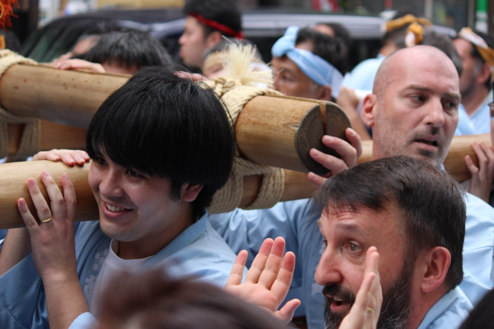
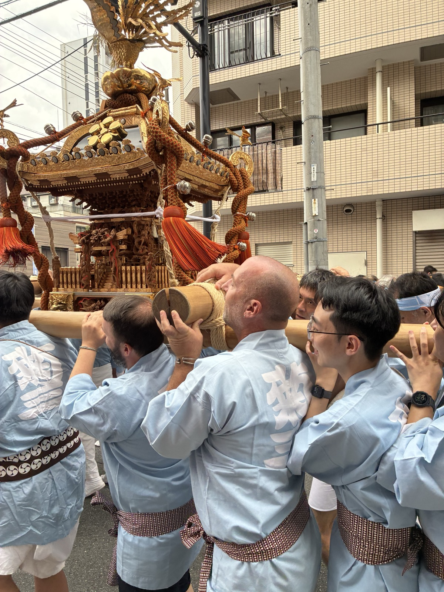
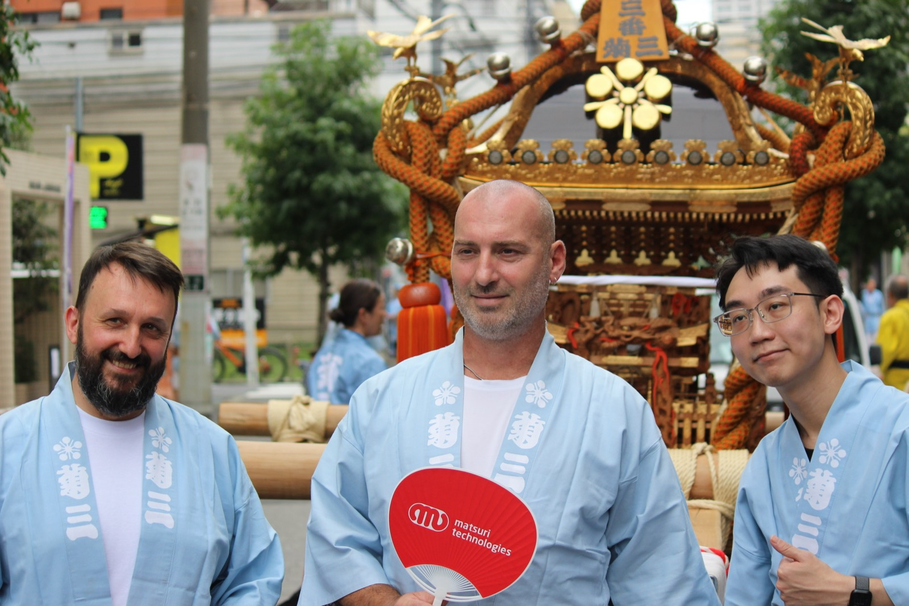

Carry the
MikoshiSUGAMO · TOSHIMA · TOKYO — NEIGHBORHOOD FESTIVAL
Shoulder a full-size portable shrine — a mikoshi so heavy it takes more than fifty people to lift — through the streets of Sugamo with the local community. Join the morning shrine visit, the afternoon grand parade, or stay for the whole day.
Photo: our team and guests at a neighborhood mikoshi festival in Tokyo (Aug 2026)
Two sessions
Shoulder the Shrine
A mikoshi is a portable Shinto shrine that a neighborhood carries on their shoulders through the streets — chanting, swaying and cheering together — once a year. The Edobashi neighborhood association is welcoming a few of our hotel guests to its festival. Theirs is one of the big ones: it takes more than fifty people just to lift it off the ground, and the association is hoping for around two hundred bearers on the day. You'll put on a happi coat, line up shoulder-to-shoulder with the local bearers, and carry the shrine yourself. No experience needed — the team shows you how.
Apply & get selected
Guest spots are limited — we have ten happi coats for each session — so we select among applicants. If you're in, we'll email you the meeting details.
Pick your session
The form asks which part you'd like to join: the morning shrine visit, the afternoon parade, or the whole day. Come for as much or as little as you like.
Suit up & carry
Rent a happi coat (¥1,000, cash) and slip it over your clothes — no changing needed. Then take your place under the poles and carry the shrine through the streets.
Two ways to join
Sunday, September 13 runs in two parts, and the association is happy for you to come to either one — or both. Please arrive about thirty minutes before your session starts.
The shrine visit
The mikoshi sets off in the morning and is carried to Tenso Shrine in Otsuka for the annual visit, then returns. A calmer, more ceremonial start to the day, and a good way to learn the rhythm of carrying before the crowds arrive.
MORNINGThe grand parade
The joint parade of the neighborhood's mikoshi, starting in front of Sugamo Station and heading along to the Togenuki Jizo temple street. This is the biggest and loudest part of the day, with crowds lining the route.
AFTERNOONFestival Highlights



Photos from a neighborhood mikoshi festival in Tokyo (August 2026), which we joined together with our guests.
Good to know
- Limited spotsApplying doesn't confirm your place. We have ten happi coats for each session, so we select among applicants. Please apply by 5:00 p.m. on Friday, Sep 11 (Japan time). We email the selected guests by 7:00 p.m. the same evening with the meeting point and time. If you haven't heard from us by then, you weren't selected this time.
- Choose your sessionMorning (9:00 a.m. to about 12:00), afternoon (1:00 to about 4:00 p.m.), or the whole day. The form asks which you'd like. Please arrive about thirty minutes before your session so there's time to collect your happi coat.
- What you wearA happi coat is rented on site for ¥1,000 (cash) — you just slip it over your own clothes, so no changing room is needed. A T-shirt underneath is fine. Please keep the happi on the whole time you're with the mikoshi, and return it at the end of the day — if you need to leave earlier, hand yours to our staff first.
- ShoesNo special footwear is needed for this festival — sandals are perfectly fine, and so are trainers. Pick a flat pair with a firm sole that you can walk and stand in for a few hours; heels and anything slippery aren't safe under a mikoshi.
- Fee¥1,000 per person for the happi rental. Please bring it in cash — it is collected when you are handed your happi coat.
- Follow the crewThis is a real neighborhood tradition we're being welcomed into. The association's officials run the procession — please follow their guidance and our staff's at all times; anyone who doesn't will be asked to return the happi and leave.
- Safety rulesNever climb on the mikoshi or its carrying poles. Bare torsos are not allowed — keep the happi on. No alcohol during the procession — fighting or drunken behavior means immediate removal.
- Getting therePlease come by train — there is no parking at the festival. The meeting point is a short walk from Sugamo Station (JR Yamanote Line, Toei Mita Line). Smoking only in designated areas.
- TimePlease keep your chosen session of Sep 13 free. The exact meeting point and time go only to selected guests, by email; if you're running late on the day, contact the staff member named in that message.
- Photos & videoBy joining, you agree that we may take photos and video of the group for our website, press and social media — this event is only for guests who are happy with that. When you take your own photos, remember local families and children are everywhere, so please ask before pointing your camera at people.
- WeatherLight rain doesn't stop the festival. If severe weather forces a cancellation, we'll message you on the morning of Sep 13. It can still be hot in mid-September — bring water.
Sugamo area, Toshima-ku, Tokyo
A short walk from Sugamo Station
The festival takes place in the streets around Sugamo Station (JR Yamanote Line, Toei Mita Line), with the morning procession heading over to Otsuka. The exact meeting point and time are sent only to selected guests, by email.
Application Form
A mikoshi spot costs ¥1,000 per person (happi rental) and spots are limited. The application takes a minute or two — reservation number, name, number of participants, which session you'd like to join and your email. We message the selected guests with the meeting details.
Tell us your reservation number, name, email, how many people, and whether you'd like the morning session, the afternoon session or both. Results are sent to the email address you provide.
APPLYThe form opens in a new tab. Your details are used only to organize this event and are handled per our event notice & privacy terms.